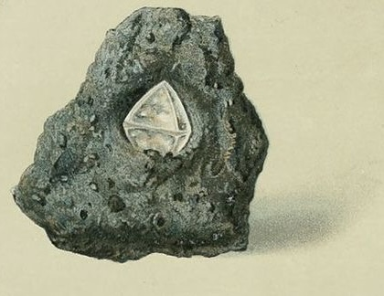
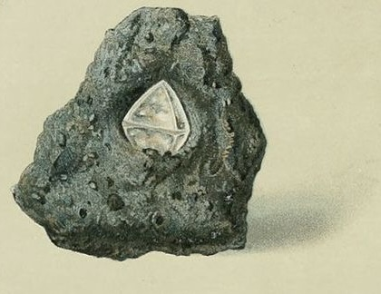

←click to travel back ←click to stop at our gallery
←click to travel back ←click to stop at our gallery
our story
"あなたの部屋をサロンに”
your salon in your room.
世界で最も忙しい年の一つであるここ、東京で生まれ育った私たち。そんな私たち2人の両親の実家は都市部から離れた地方であった。
祖父母の家を訪れるたびに感じる日本の伝統的文化とその安心感。
香り、色、手触り、かたち、味、温度。
そこはまるで癒されるサロンのような空間だった。
都市は年々と改築され、近代へと未来と進んでいく。置いていかれがちである日本の美学を通して、疲れた心身を癒す空間を、自分の部屋の一画で創り出す事はできないか。
毎日の忙しい生活の中に、癒しを溶け込ませる事はできないか。
私たちがセレクトする日本製のプロダクトであなたの部屋に癒され一息つけるサロン空間を。
goal
-日本の社会や文化の中で生きることで生まれる負のエネルギーやストレスを治癒（ちゆ）する。
-私たちのブランドを通し、癒しを求める人々の生活にサロン空間を創り日本の美学を溶け込ませる。